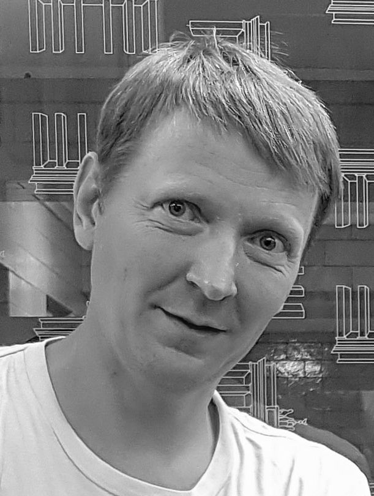

About me
My profile

HELLO, I AM
Pavlo Maistrenko
My aim | Find a team, where I can put my knowledge and experience to practice and enjoy professional growth in the field of software development
Moved to Germany from Ukraine in 2022 in the face of the war. Having a mixed technical and humanitarian background with extended consulting experience in IT procurement and project planning.
- February 10, 1975
- +49 1516 4307247
- p.maistrenko@gmail.com
- Angermünde, Germany
HIGH SCHOOL AND UNIVERSITY EDUCATION
1993 – 1998
Specialization: International Information Systems and Technology
Dealing with development of information systems, decision making theory and simulation
Bachelor's degree in international relations
Degree in English (German as the second foreign language)
Master’s Degree in International Information (Graduation Paper: “Software Simulation Tool for Modelling the International Relations”)
Honors degree
Dealing with development of information systems, decision making theory and simulation
Bachelor's degree in international relations
Degree in English (German as the second foreign language)
Master’s Degree in International Information (Graduation Paper: “Software Simulation Tool for Modelling the International Relations”)
Honors degree
1992 – 1993
Major: Industrial Electronics
Excellent study results (not finished)
Excellent study results (not finished)
1989 – 1992
Graduation. Extended Teaching in Physics, Mathematics, and Informatics
Courses
2022 – 2024
Full-Stack WEB Software Development (a series of 12 courses by IBM)
Programming with Google Go (a series of three courses by Rice University)
Parallel, Concurrent, and Distributed Programming in Java - ongoing (a series of three courses by University of California Irvine)
Programming with Google Go (a series of three courses by Rice University)
Parallel, Concurrent, and Distributed Programming in Java - ongoing (a series of three courses by University of California Irvine)
German Certificate B1
German Certificate B2, C1
2012
A study tour to learn administration of social programs, business processes and the use of information technology
2011
A study tour to learn information technology infrastructure underpinning the Irish social protection system.
1999 – 2010
Workshop on Procurement of Information Systems
Procurement workshop (3-mal)
Disbursement workshop (2-mal)
Briefing in Procurement of Information Systems
Procurement workshop (3-mal)
Disbursement workshop (2-mal)
Briefing in Procurement of Information Systems
Work Experience
I have had different jobs, most of which were related to information technology, public administration, social welfare, statistics and almost invariably required knowledge of foreign languages. In Germany I immediately focused on the assistance to fellow Ukrainians, using the knowledge of German language, and to deepening my software development knowledge.
2022 –
Teacher of German and English for Ukrainian refugees
Assistance to the refugees during visits to offices and doctors
Assistance to the refugees during visits to offices and doctors
2014 – 2022
Independent IT Procurement Consultant for several Ukrainian IT companies, MKM Service, Huawei Ukraine, SiBIS, Lantec
Organizing preparation of bids (procurement of information and communication technology)
Preparation of sample document formats
Review of legal, commercial, and technical parts of the bids
Preparation of sample document formats
Review of legal, commercial, and technical parts of the bids
2014 – 2022
Translation or editing of technical texts (mostly English/Ukrainian)
2014 – 2015
Development of projects, particularly of the regional development
2004 – 2013
Development of project and procurement plans
Analysis of business processes
Development of software and hardware requirements
Project control and team management
Analysis of business processes
Development of software and hardware requirements
Project control and team management
1999 – 2006
Project planning, procurement planning
Improvement of business processes
Procurement of information technology
Procurement of information technology
1998 – 1999
Preparation of project documents
Development of financial accounting system (Microsoft Access)
Work with contracts
Development of financial accounting system (Microsoft Access)
Work with contracts
IT Skills
I started learning sorware development in the late 80s, have learnt and used many different aspects of technology. Below is a list of technologies, which may be relevant today, especially those which I improved on or acquainted with during the last years. I like learning from books and possess a library of IT literature ranging from project management, requirements, architecture, quality assurance to particular information technologies.
Command shells – Bash, cmd
Version control – Git/GitHub
CI/CD automation – Travis, Jenkins, GitHub Actions
Coding – Sublime 3, Atom
Languages – • Java, JavaScript, VBA, Python
Documentation – Javadoc, ApiDoc, OpenAPI/ Swagger
Static analysis – pmd (Java), ESLint (JS)
Testing – JUnit, JCov (Java), Mocha, Sinon, Istanbul (JS), Cucumber (BDD), Selenium WebDriver (UI)
Data exchange – JSON, JAML, XML
Server-side Framework – Node.JS
Package management – npm (JS), yarn (JS)
WEB frameworks – React (JS), Django (Python)
Databases – IBM Cloudant/ Apache CouchDB, Elasticsearch, MySQL, Microsoft Access
Virtualization and containerization – IBM Cloud, Docker, Kubernetes, OpenShift
Collaboration – Slack, Telegram, Google Docs
AI/Machine Learning – IBM Watson NLP
Project planning – Microsoft Project
Design Visualization – Microsoft Visio, UML
Requirements specification – Use cases, User stories, UML activity diagrams, ISO 29148, IEEE 830
Business process analysis – IDEF0, BPMN
Development processes – RUP, Agile
Languages
In addition to my mother tongues: Ukrainian and Russian, I professionally learnt and continuously used English (C2) and mastered German (C1). Learning foreign languages is a life-long engagement.
Personal
Family
I live with my wife, we have a 11-year old child, whom we grow up a multilingual
Hobbies
I enjoy (inline-)skating and biking with my family, like playing piano and listening to music. I like reading, have a nice library.